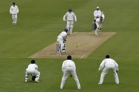
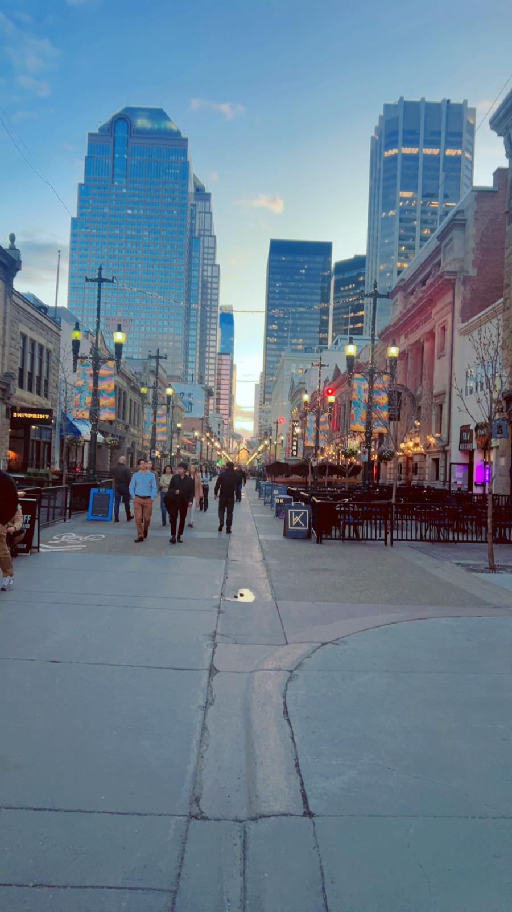
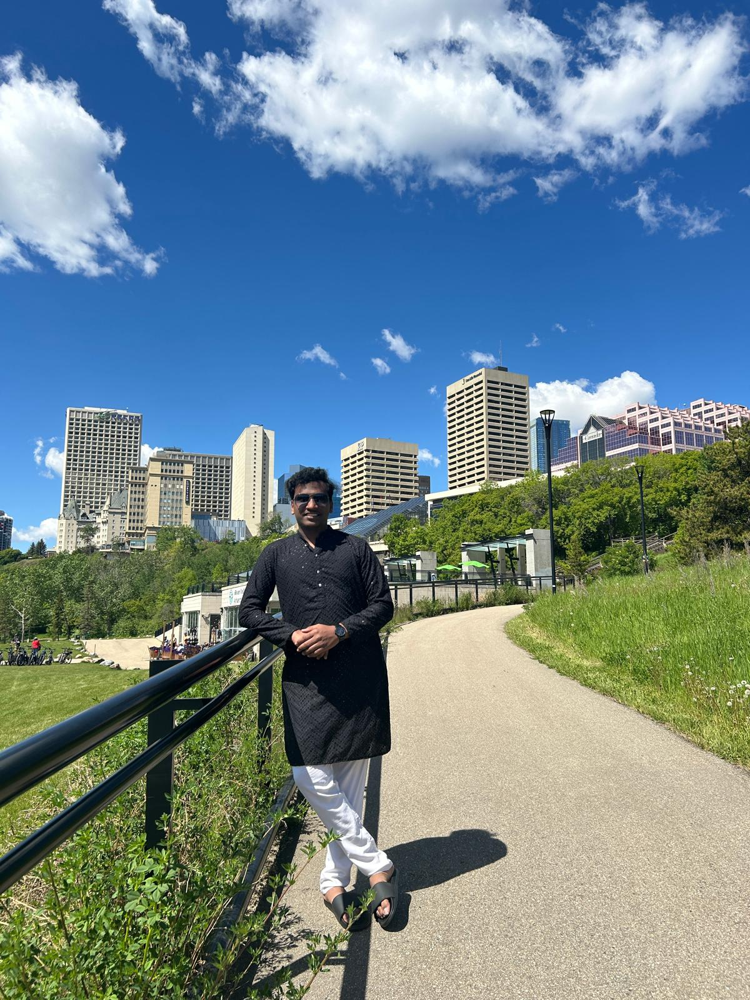
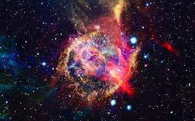

Hobbies



I enjoy playing cricket and exploring new places. I like meeting new people and trying out different cuisines. Adventuring and discovering hidden spots makes life more exciting! I am also passionate about learning new skills, such as photography and coding, which challenge me creatively and intellectually. Spending time in nature and going on hikes helps me relax and stay energized. Reading books and watching documentaries expands my knowledge and inspires new ideas. I love participating in community activities and volunteering whenever I get the chance, as it allows me to give back and meet like-minded people.
Interests

I enjoy learning about space exploration and the mysteries of the universe.I am passionate about environmental conservation and finding ways to protect our planet. Watching documentaries and exploring different cultures broadens my perspective.
I am also fascinated by how science and technology can help address global challenges, from climate change to sustainable energy solutions. Engaging in community projects and discussions about environmental issues allows me to turn my curiosity into meaningful action. I enjoy connecting with others who share these interests, as it inspires new ideas and ways to make a positive impact.